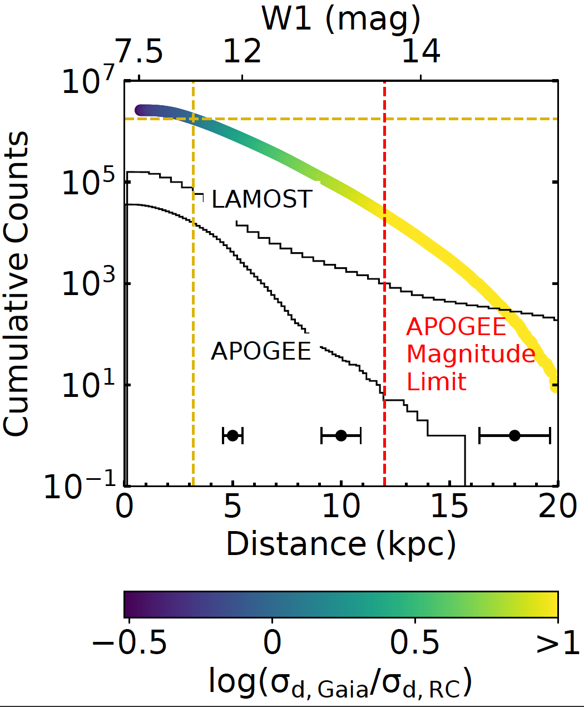

CEMP
Over 2 Million Carbon-Enhanced Metal-Poor star candidates from BP/RP Spectra in Gaia DR3
Graduate Student
Department of Astronomy
Univeristy of Texas at Austin
I am a NSF Graduate Research Fellow in astronomy at the University of Texas at Austin. I do research in Galactic archaeology with Prof. Keith Hawkins. Specifically, I am interested in finding and characterizing the oldest stars in our Galaxy. I received my B.A. in Physics (with an emphasis on Astrophysics) from Colorado College in 2018.

Since the beginning of graduate school at the University of Texas at Austin (UT), I have been working in Dr. Keith Hawkins' Galactic archaeology group.
As Galactic archaeologists, we use stars as fossils to study one of the fundamental questions of astronomy, the formation and evolution of galaxies, like the Milky Way.
Studying the spatial, kinematic and chemical composition of vast numbers of stars can reveal endless information about our Galaxy's and the universe's history.
I have spent the majority of my PhD focusing on ancient stars and the inner Galaxy. As my first project, I began leading the Chemical Origins of Metal-poor Bulge Stars (COMBS) survey.
This survey culminated in three installments which have been published in MNRAS.
In addition to this work I have also lead a paper which dynamically constrains the length of the Milky Way's Galactic bar.
I also have published a number of papers using machine learning, including a paper detecting ~2.6 million red clump stars from photometry.
More recently, I led a paper discovering over 2 million carbon-enhanced metal-poor stars using low-resolution BP/RP spectra from Gaia DR3. See the links below to learn more.
Over 2 Million Carbon-Enhanced Metal-Poor star candidates from BP/RP Spectra in Gaia DR3
Constraining the length and pattern speed of the Milky Way bar from direct orbit integration of APOGEE and Gaia data
The COMBS survey III: The Chemodynamical Origins of Metal-Poor Bulge Stars
The COMBS survey II: Distinguishing the Metal-Poor Bulge from the Halo Interlopers
From the Inner to Outer Milky Way: A Photometric Sample of 2.6 Million Red Clump Stars
The COMBS survey I: Chemical Origins of Metal-Poor Stars in the Galactic Bulge
I love sharing all of the amazing things about space that I've learned with everyone that I can. Check out this awesome article from WIRED magazine on the Gaia mission where my work on carbon-enhanced metal-poor was highlighted! Below is a quick summary of the main outreach efforts that I am a part of. Please dont hesitate to contact me if you want to learn more!
Girl Day at UT Austin is a annual STEM festival for elementary and middle school students. Each year over 8,000 kids come to campus for fun, interactive STEM-focused activities. I run the Association of Women in Astronomy Research and Education (AWARE) booth. At our booth we have activities desgined to educate and excite the students about astronomy, such as a build your own pulsar and star finding chart along with a solar-viewing telescope.
Carbon-enhanced metal-poor (CEMP) stars make-up almost a third of stars with [Fe/H]< -2, although their origins are still poorly understood. It is highly likely that one type of CEMP star (CEMP- s stars) is tied to mass-transfer events taking place in binary stars, while another type (CEMP-no stars) has been suggested to be enriched by the nucleosynthetic yields of the first generations of stars. Historically, studies of CEMP stars have been explored in the Galactic halo, but more recently they have also been detected in the thick disk and bulge components of the Milky Way. Gaia DR3 has provided an unprecedented sample of over 200 million low-resolution (R ≈ 50) spectra from the BP and RP photometers.
In this work, we use XGBoost to classify these spectra and detect the largest all-sky sample of CEMP stars to date.
In total, we find over 2 million CEMP stars, with a contamination rate of 5%.
This sample spans from the inner to outer Milky Way with distances as close as 0.4 kpc from the Galactic center, and as far as > 30 kpc.
We also find that 0.28% of these stars are identified as non-single stars in Gaia DR3.
By providing the largest, uniformly analyzed sample of CEMP stars we can further investigate the frequency of CEMP- s and CEMP-no stars throughout the Galaxy and constrain the origins of these classes of stars.
The dynamics of the inner Galaxy contain crucial clues for untangling the evolutionary history of the Milky Way. However, the inner Galaxy's gravitational potential is poorly constrained, partly because the length of the Galactic bar is currently under debate with length estimates ranging from 3.5-5 kpc. This work searches for another way to constrain the length of the Galactic bar using the full 6-D phase-space information of stars available with Gaia and APOGEE. Specifically, we investigate whether we can determine the length of the bar by finding the last trapped orbit and the effect of the assumed potential on these results.
We verify our method with N-body simulations and find that the maximal extent of orbits in the bar is not always consistent with that of the potential used to calculate the orbits. We calculate the orbital fundamental frequencies which allows us to cleanly select stars on bar-supporting orbits. We take the 99th percentile of the apocenter distrubution of the selected bar stars as the bar length. Although contamination by disk stars is negligble, we do know that this selection will miss some bar-supporting orbit families which may lead us to underestimate the bar length. Essentially what we find is that the only time the measured bar length from the orbits matches the bar length of the potential used, is when the potential is similar to the model from which the initial positions and velocities are extracted.
 When we apply the orbit integration method to ≈ 210,000 stars in APOGEE DR17 and Gaia eDR3 data, we find a self-consistent result only for potential models with a dynamical bar length of ≈ 3.5 kpc and pattern speed of 39 km/s/kpc.
We find the Milky Way's trapped bar orbits extend out to only ≈ 3.5 kpc, but there is also an overdensity of stars at the end of the bar out to 4.8 kpc which could be related to an attached spiral arm.
We also find that the measured orbital structure of the bar is strongly dependent on the properties of the assumed potential.
When we apply the orbit integration method to ≈ 210,000 stars in APOGEE DR17 and Gaia eDR3 data, we find a self-consistent result only for potential models with a dynamical bar length of ≈ 3.5 kpc and pattern speed of 39 km/s/kpc.
We find the Milky Way's trapped bar orbits extend out to only ≈ 3.5 kpc, but there is also an overdensity of stars at the end of the bar out to 4.8 kpc which could be related to an attached spiral arm.
We also find that the measured orbital structure of the bar is strongly dependent on the properties of the assumed potential.
Simulations predict that the metal-poor stars in the Galactic bulge are some of the oldest stars in the Galaxy. However, in order to determine if this stars are truly ancient we must undertand their origins. It is currently unknown if the metal-poor stars in the bulge are halo interlopers, a unique accreted population, part of the boxy/peanut-shaped bulge or a classical bulge population. By studying their chemo-dynamical properties we can begin to contrain their origins and importance in our Galaxy's formation history.
In this work, we analyze data from the VLT/FLAMES spectrograph of 523 stars in the Galactic bulge targeted using SkyMapper photometry. We take a probabilistic orbit analysis approach to determine whether a given star will stay confined to the bulge as opposed to being a halo interloper, which is just passing through the bulge. We also determine metallicity estimates for 473 stars using the Ca-II NIR Triplet. We find that ~50% of metal-poor stars currently in the bulge will stay confined and that this fraction decreases steadily with decreasing metallicity (see figure to the right).
Previous work on metal-poor stars in the Galactic bulge, which did not separate the confined stars from the halo interlopers, found evidence for a classical bulge population using the line-of-sight velocity dispersion. We show that when the halo interlopes are removed, the confined stars show the signature of a boxy/peanut-shaped (B/P) bulge without the need to invoke a classical bulge population (see figure to the left). However, we also find an interesting overabundance of counter-rotating stars amoung the most metal-poor stars in our sample that is not explained by current B/P bulge models. In total, our work demonstrates that the metal-poor bulge consists of atleast two populations: the halo interlopers and confined B/P population.
Red clump stars are standard candles proven to give more accurate distance measurements than parallaxes at distances > 3 kpc. However, identifying large pristine samples of red clump stars has historically been difficult. The asteroseismic parameters, period spacing and frequency separation clearly separate helium core-burning red clump stars from inert core red giant branch stars. Recently, Hawkins, et al (2018) demonstrated that the period spacing and frequency separation can be derived from stellar spectra. Specifically, red clump stars can be selected from the difference in the carbon to nitrogen ratio due to mixing that occurs at the top of the red giant branch.
In this work, we select red clump stars from the ~ 200 million stars which have photometry from 2MASS, AllWISE, Gaia, and Pan-STARRS. We derive the effective temperature, surface gravity, frequency seperation, and period spacing of these stars from 13 bands of photometry and parallax using a mixture density network. We achieve a contamination rate of ~20% for a sample of ~405,000 red clump stars. This is similar to the contamination rate found when selecting red clump stars using effective temperature and surface gravity derived from high-resolution spectra. We also present a catalog of ~2.6 million red clump stars with a contamination rate of ~33%.
 The Figure on the right shows the reverse cumulative distribution of the derived distances for this sample. Having been photometrically derived, our sample is significantly less confined to nearby stars than the largest spectroscopic sample (Ting et al, 2018). Therefore, our sample provides more precise distances where they really matter, in the distant Galaxy where there are many current questions about the structure and where distances are most difficult to derive. Our sample contains over 1.8 million stars with distances more precise than the distance given by Gaia parallaxes. Our sample reaches farther into the Galactic halo and Galactic center than previous pristine red clump samples with our most distant red clump star at a distance of ~ 20 kpc.
Chemistry and kinematic studies can determine the origins of stellar population across the Milky Way. The metallicity distribution function of the bulge indicates that it comprises multiple populations (see left Figure), the more metal-poor end of which is particularly poorly understood. It is currently unknown if metal-poor bulge stars ([Fe/H] < -1 dex) are part of the stellar halo in the inner most region, or a distinct bulge population or a combination of these. Cosmological simulations also indicate that the metal-poor bulge stars may be the oldest stars in the Galaxy.
In this study, we successfully target metal-poor bulge stars selected using SkyMapper photometry. We determine the stellar parameters of 26 stars and their elemental abundances for 22 elements using R~ 47,000 VLT/UVES spectra and contrast their elemental properties with that of other Galactic stellar populations. We find that the elemental abundances we derive for our metal-poor bulge stars have lower overall scatter than typically found in the halo. This indicates that these stars may be a distinct population confined to the bulge. If these stars are, alternatively, part of the inner-most distribution of the halo, this indicates that the halo is more chemically homogeneous at small Galactic radii than at large radii.
Some second generation (SG) globular clusters (GC) stars are thought to have a unique chemical signature in that they show a Mg-Al anti-correlation. We find two stars whose chemistry is consistent with second-generation globular cluster stars (see left Figure). The chemistry of these two stars indicate that part of the metal-poor population of the bulge could be made up of dissipated globular clusters. There are no known globular clusters within an angular separation of one degree of these stars. This paper is the first part of the Chemical Origins of Metal-poor Bulge Stars (COMBS) survey that will chemo-dynamically characterize the metal-poor bulge population.